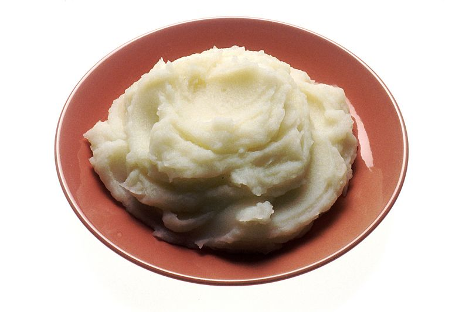

INGREDIENT LIST
***FOR ONE SERVING***
- 1 large or 2 medium Yukon gold potatoes (DO NOT SUBSTITUTE WITH OTHER VARIETIES)
- 4 tablespoons of milk
- 1 tablespoon Butter (NOT MARGARINE)
- OPTIONAL: bacon bits, green onions, and grated cheddar cheese
PROCEDURES
PREPARATION
- Remove milk and butter from the fridge before proceeding with further preparation described below.
- Cut Yukon gold potatoes into 1/4 inch pieces.
- OPTIONAL:
- Prehat the oven to 425 degrees Fahrenheit and cut raw bacon into 1/8 inch pieces.
- Chop the green onion into small 1/8 inch pieces.
COOKING
- Cook the bacon bits at 425 degrees Fahrenheit for about 30 minutes.
- Meanwhile, place the potatoes into a pot of water and add salt.
- Bring to a boil and simmer for about 20 minutes.
- Drain potatoes from the pot using a strainer.
- Add a tablespoon of butter and 4-5 tablespoons of milk to the potatoes and then start mashing.
- For more flavour, add salt and ground black pepper.
- OPTIONAL:
- Sprinkle the bacon bits and chopped green onions on top of the mashed potatoes.
- ENJOY!